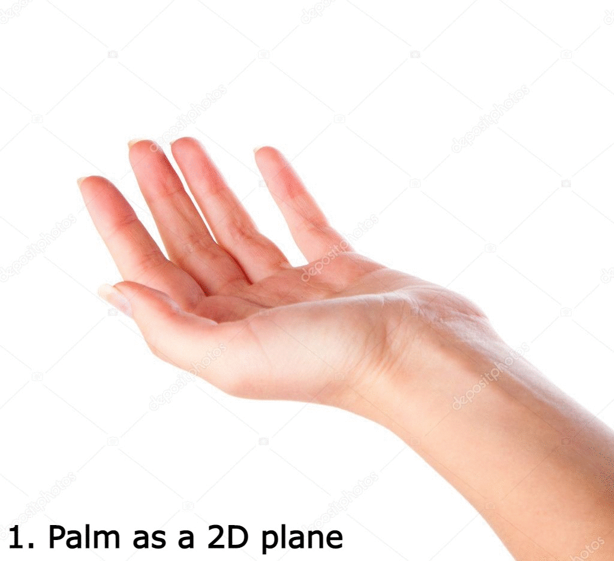

A Real Time Sign LAnguage Translator
ARTSLAT is a real-time sign letter translator that uses Google's Mediapipe alongside a small pre-trained model to create a lightweight translator that uses a webcam to detect the correct ASL sign letter.
The Mediapipe Hands module detects and tracks instances of hands, them in a coordinate form. In ARTSLAT, with this Dataset , coordinates of the hands for each image were extracted and normalised before training a model on the data.
Normalisation
The model is expected to recognise the relationship between the different joints, and extrapolate the data to output a letter. The model in particular was designed to be lightweight with only 2 layers but still achieved a weighted f1-score of 0.95.
Trainer Implementation
A trainer to teach the ASL letters was created by superimposing a letter (guide hand) onto the user's hand, by tracking the user's wrist joint and placing the guide hand at the point. However, it was sometimes difficult for users to visualise the proper sign as some signs needed 3D representation.
Thus, an AR representation of the signed letter was created so that, by just rotating one's hand, one could see a 3d representation of the signed letter. However, to track rotation, the guide hand had to undergo a transformation.
Coordinate Transformation

1. Assume the palm as a 2D plane in a 3D space
2. Find the normal vectors
3. Find the rotation matrix between the normal vector
4. Apply the rotation matrix
Created by Bryan Ong